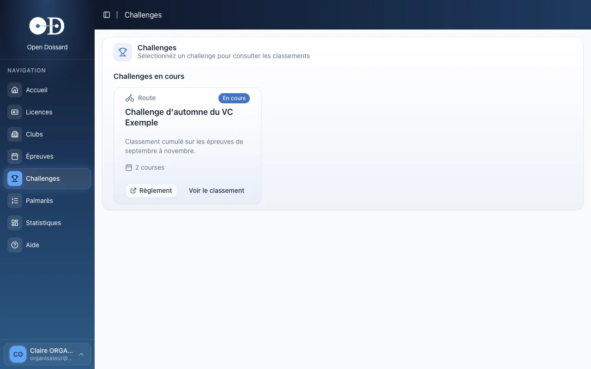
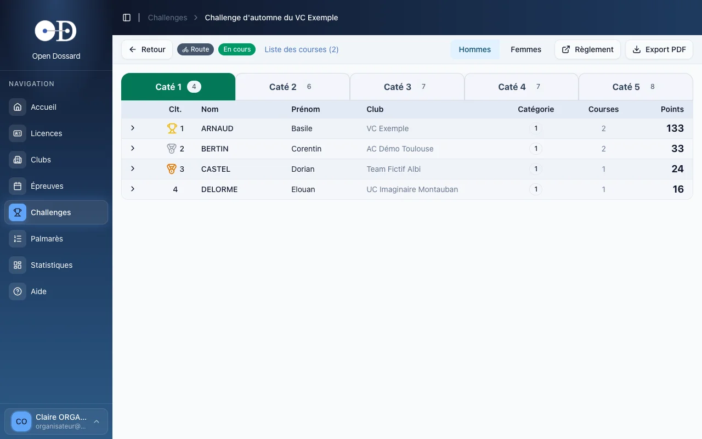
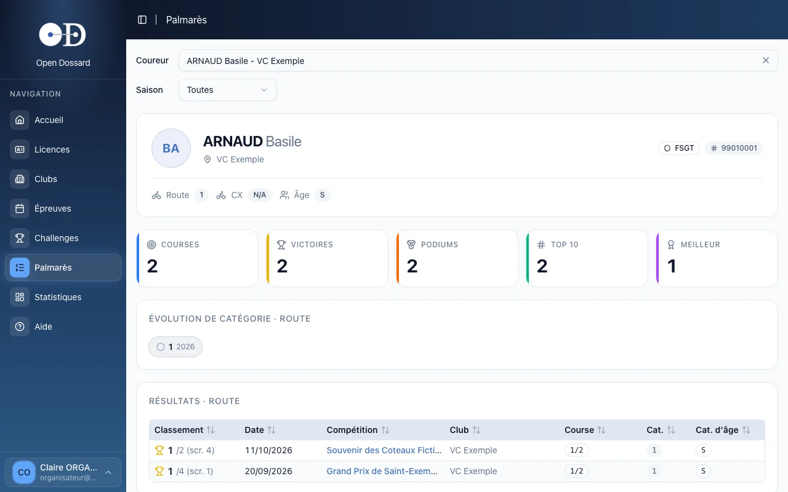

- • Un challenge cumule les points des coureurs sur plusieurs épreuves, catégorie par catégorie.
- • Les classements des challenges se calculent automatiquement à partir des classements saisis.
- • Le palmarès d'un coureur regroupe tous ses résultats, saison par saison.
Consulter un challenge
- Dans le menu, cliquez sur Challenges : les challenges en cours apparaissent en premier, les challenges terminés ensuite.
- Sur la carte du challenge, cliquez sur Voir le classement. Le lien Règlement affiche ses règles.

Le classement du challenge
Le classement s'affiche par catégorie (un onglet chacune) et par genre (boutons Hommes / Femmes). Pour chaque coureur : sa place, son club, le nombre de courses disputées et ses points.

- la flèche en début de ligne déplie le détail des points course par course ;
- Liste des courses rappelle les épreuves qui comptent pour le challenge ;
- Export PDF produit le classement à imprimer ou à diffuser.
La création d'un challenge, le choix de ses épreuves et sa clôture en fin de saison sont réservés aux administrateurs. Pour lancer un challenge, écrivez à help@dossardeur.com. À la clôture, le classement est figé et archivé.
Le challenge reprend les classements saisis sur chaque épreuve. Une erreur de dossard ou de catégorie à l'arrivée se répercute sur le challenge : corrigez-la dans les classements de l'épreuve et le challenge se met à jour.
Le palmarès d'un coureur
- Dans le menu, cliquez sur Palmarès, ou sur l'icône Palmarès d'une ligne de la liste des licenciés.
- Recherchez le coureur par son nom.
- Choisissez si besoin une saison précise.

Le palmarès réunit :
- des compteurs : courses, victoires, podiums, top 10 et meilleure place ;
- l'évolution de catégorie du coureur au fil des saisons ;
- la liste de ses résultats : place dans la catégorie et au scratch, date, épreuve, départ et catégorie.
Pratique pour vérifier qu'un coureur court dans la bonne catégorie, ou pour préparer la présentation des favoris au micro.